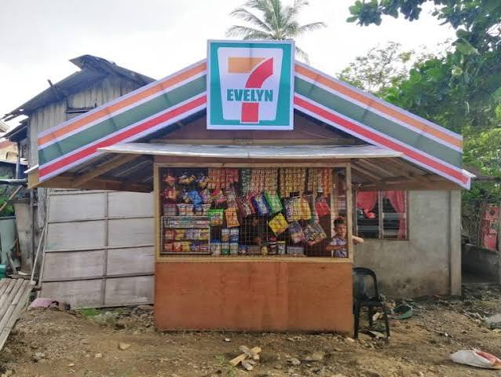
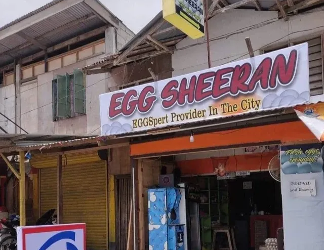
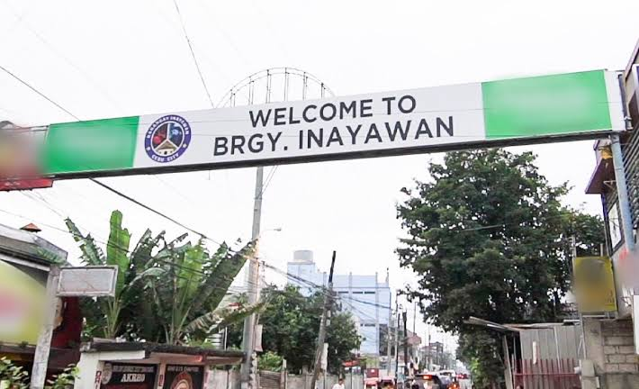
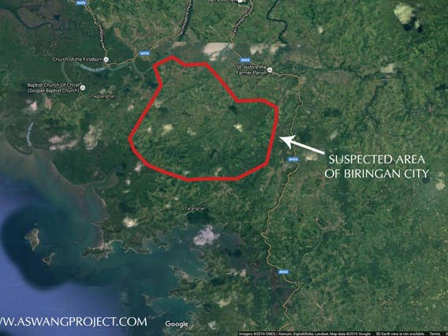

7-Evelyn
Whether you're looking for basic necessities, household goods, cleaning materials, and even high-quality furniture, with a world-class customer service along the way. 7-Evelyn offers a top-notch shopping experience that is guaranteed to make you wanna keep coming back for more.
Mang Inasar
Looking for the best of the best quality, farm fresh, and delicious chicken? Look no further, because Mang Inasar has got you covered. So good, yet so rage inducing! PS: We will not be held responsible for the damages caused by his delicious chicken, so don't start blaming us.

Egg Sheeran
Tired of pale yolks and bland eggs? Upgrade your breakfast with eggs laid by genuinely pasture-raised hens. Egg Sheeran delivers farm-to-doorstep eggs within 48 hours of gathering. Their hens roam on open green pastures daily, resulting in deep orange yolks, robust shells, and real, farm-fresh flavor you can taste in every bite.
Barangay Inayawan
Looking for a destination that literally rejects you by name? Pack your bags for Barangay Inayawan in Cebu City! Tired of standard tourist traps that welcome you with open arms? Experience the thrill of visiting a place whose very name sounds like a collective sigh of refusal. Come for the vibrant local culture, stay because you took a wrong turn near the old landfill site and traffic forced you to live here now.


Biringan City
Boasting towering skyscrapers of gleaming gold, hyper-advanced flying vehicles, and streets paved with architectural marvels you literally cannot see, this mystical sinkhole of the supernatural offers a vacation experience unlike any other. Pack your imagination, leave your GPS at home, and try booking a flight to the invisible capital of the Waray archipelago. So unreal because It's not even real!